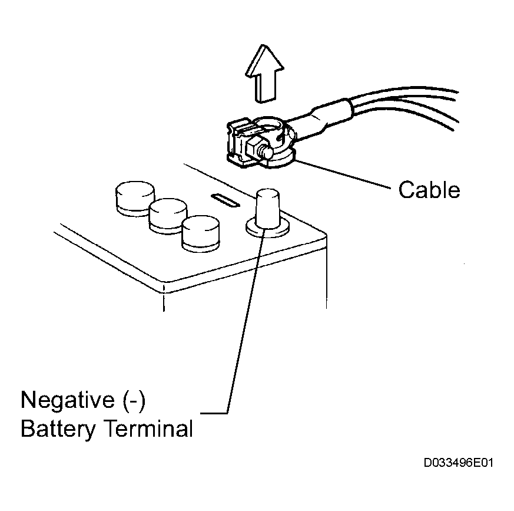

Meter / Gauge System: Precaution
- DISCONNECT AND RECONNECT CABLE FROM NEGATIVE BATTERY TERMINAL
- Before performing electronic work, disconnect the cable from the negative (-) battery terminal in order to prevent it from shorting and burning out.
- When disconnecting and reconnecting the battery cable, turn the ignition switch OFF and headlight dimmer switch OFF. Then loosen the terminal nut completely. Be careful not to damage the cable or terminal.
- When the battery cable is disconnected, the settings of the clock and radio, memory of DTCs, etc. are erased. Before disconnecting the battery cable, take notes of the settings and memory.

Courtesy of © TOYOTA, LICENSE AGREEMENT TMS1002